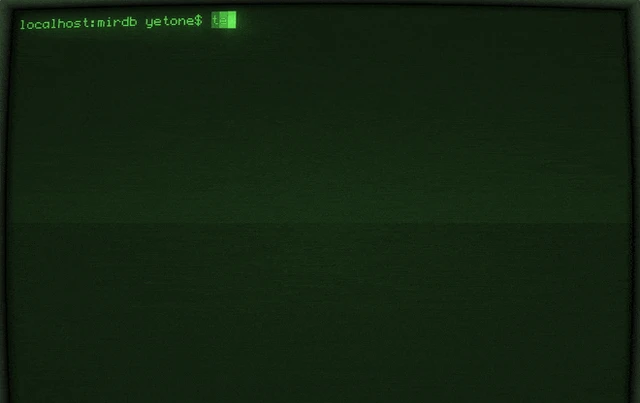

Memcached Protocol
Drop-in replacement with full protocol compatibility. Use existing Memcached clients without any code changes.
Built with Rust. Powered by LSM Trees. Memcached Compatible.
Drop-in replacement with full protocol compatibility. Use existing Memcached clients without any code changes.
Persist data to disk with SSTable files. Your data survives restarts and system failures.
Efficient write performance with automatic compaction. Optimized for write-intensive workloads.
Memory-safe, high-performance implementation. Zero-cost abstractions with compile-time safety guarantees.

Install MirDB using Cargo:
# Clone the repository
git clone https://github.com/yetone/mirdb.git
cd mirdb
# Build the project
cargo build --release
# Run MirDB
cargo run --releaseOnce MirDB is running, connect using any Memcached client:
# Connect using telnet
telnet localhost 11211
# Store a value (set command)
set mykey 0 3600 5
hello
STORED
# Retrieve the value (get command)
get mykey
VALUE mykey 0 5
hello
END
# Delete the value (delete command)
delete mykey
DELETED